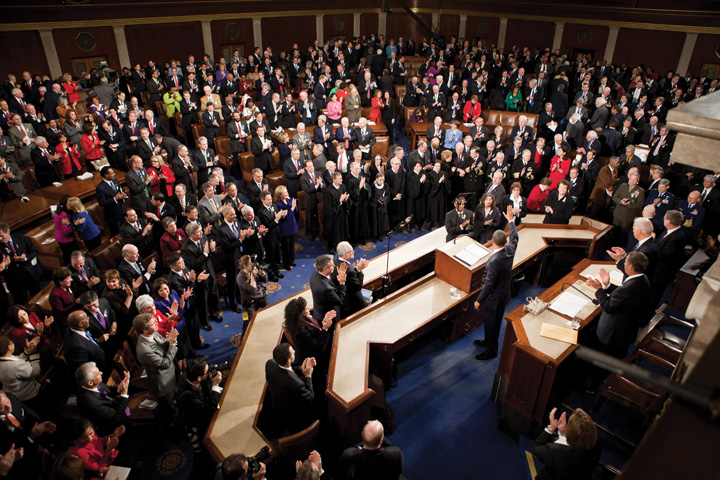
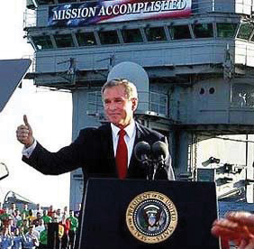

After reading this section, you should be able to answer the following questions:
The political system was designed by the framers to be infrequently innovative, to act with neither efficiency nor dispatch. Authority is decentralized. Political parties are usually in conflict. Interests are diverse.George C. Edwards III, The Strategic President: Persuasion and Opportunity in Presidential Leadership (Princeton, NJ: Princeton University Press, 2009).
Yet, as we have explained, presidents face high expectations for action. Adding to these expectations is the soaring rhetoric of their election campaigns. For example, candidate Obama promised to deal with the problems of the economy, unemployment, housing, health care, Iraq, Afghanistan, and much more.
As we have also explained, presidents do not invariably or even often have the power to meet these expectations. Consider the economy. Because the government and media report the inflation and unemployment rates and the number of new jobs created (or not created), the public is consistently reminded of these measures when judging the president’s handling of the economy. And certainly the president does claim credit when the economy is doing well. Yet the president has far less control over the economy and these economic indicators than the media convey and many people believe.
A president’s opportunities to influence public policies depend in part on the preceding administration and the political circumstances under which the new president takes office.Stephen Skowronek, Presidential Leadership in Political Time (Lawrence: University Press of Kansas, 2008). Presidents often face intractable issues, encounter unpredictable events, have to make complex policy decisions, and are beset by scandals (policy, financial, sexual).
Once in office, reality sinks in. Interviewing President Obama on The Daily Show, Jon Stewart wondered whether the president’s campaign slogan of “Yes we can” should be changed to “Yes we can, given certain conditions.” President Obama replied “I think I would say ‘yes we can, but…it’s not going to happen overnight.’”Sheryl Gay Stolberg, “Hope and Change as Promised, Just Not Overnight,” New York Times, October 28, 2010, A18.
So how do presidents get things done? Presidential powers and prerogatives do offer opportunities for leadership.
Between 1940 and 1973, six American presidents from both political parties secretly recorded just less than five thousand hours of their meetings and telephone conversations.
Check out http://millercenter.org/academic/presidentialrecordings.
Presidents indicate what issues should garner most attention and action; they help set the policy agenda. They lobby Congress to pass their programs, often by campaign-like swings around the country. Their position as head of their political party enables them to keep or gain allies (and win reelection). Inside the executive branch, presidents make policies by well-publicized appointments and executive orders. They use their ceremonial position as head of state to get into the news and gain public approval, making it easier to persuade others to follow their lead.
Presidents try to set the political agenda. They call attention to issues and solutions, using constitutional powers such as calling Congress into session, recommending bills, and informing its members about the state of the union, as well as giving speeches and making news.Donna R. Hoffman and Alison D. Howard, Addressing the State of the Union (Boulder, CO: Lynne Rienner Publishers, 2006).
Figure 13.3
The president’s constitutional responsibility to inform Congress on “the state of the union” has been elevated into a performance, nationally broadcast on all major networks and before a joint session on Capitol Hill, that summarizes the key items on his policy agenda.
Source: Photo courtesy of the Executive Office of the President of the United States (Chuck Kennedy), http://commons.wikimedia.org/wiki/File:Obama_waves_State_of_the_Union_2011.jpg.
Congress does not always defer to and sometimes spurns the president’s agenda. Its members serve smaller, more distinct constituencies for different terms. When presidents hail from the same party as the majority of Congress members, they have more influence to ensure that their ideas receive serious attention on Capitol Hill. So presidents work hard to keep or increase the number of members of their party in Congress: raising funds for the party (and their own campaign), campaigning for candidates, and throwing weight (and money) in a primary election behind the strongest or their preferred candidate. Presidential coattails—where members of Congress are carried to victory by the winning presidential candidates—are increasingly short. Most legislators win by larger margins in their district than does the president. In the elections midway through the president’s term, the president’s party generally loses seats in Congress. In 2010, despite President Obama’s efforts, the Republicans gained a whopping sixty-three seats and took control of the House of Representatives.
Since presidents usually have less party support in Congress in the second halves of their terms, they most often expect that Congress will be more amenable to their initiatives in their first two years. But even then, divided governmentA situation, increasingly common in recent years, where the presidency and at least one chamber of Congress are controlled by different parties., where one party controls the presidency and another party controls one or both chambers of Congress, has been common over the last fifty years. For presidents, the prospect of both a friendly House and Senate has become the exception.
Even when the White House and Congress are controlled by the same party, as with President Obama and the 2009 and 2010 Congress, presidents do not monopolize the legislative agenda. Congressional leaders, especially of the opposing party, push other issues—if only to pressure or embarrass the president. Members of Congress have made campaign promises they want to keep despite the president’s policy preferences. Interest groups with pet projects crowd in.
Nonetheless, presidents are better placed than any other individual to influence the legislative process. In particular, their high prominence in the news means that they have a powerful impact on what issues will—and will not—be considered in the political system as a whole.
What about the contents of “the president’s agenda”? The president is but one player among many shaping it. The transition from election to inauguration is just over two months (Bush had less time because of the disputed 2000 Florida vote). Presidents are preoccupied first with naming a cabinet and White House staff. To build an agenda, presidents “borrow, steal, co-opt, redraft, rename, and modify any proposal that fits their policy goals.”Paul C. Light, The President’s Agenda: Domestic Policy Choice from Kennedy to Clinton, 3rd ed. (Baltimore: Johns Hopkins University Press, 1999), 89. Ideas largely come from fellow partisans outside the White House. Bills already introduced in Congress or programs proposed by the bureaucracy are handy. They have received discussion, study, and compromise that have built support. And presidents have more success getting borrowed legislation through Congress than policy proposals devised inside the White House.Andrew Rudalevige, Managing the President’s Program: Presidential Leadership and Legislative Policy Formulation (Princeton, NJ: Princeton University Press, 2002).
Crises and unexpected events affect presidents’ agenda choices. Issues pursue presidents, especially through questions and stories of White House reporters, as much as presidents pursue issues. A hugely destructive hurricane on the Gulf Coast propels issues of emergency management, poverty, and reconstruction onto the policy agenda whether a president wants them there or not.
Finally, many agenda items cannot be avoided. Presidents are charged by Congress with proposing an annual budget. Raw budget numbers represent serious policy choices. And there are ever more agenda items that never seem to get solved (e.g., energy, among many others).
After suggesting what Congress should do, presidents try to persuade legislators to follow through. But without a formal role, presidents are outsiders to the legislative process. They cannot introduce bills in Congress and must rely on members to do so.
Presidents aim at legislative accomplishments by negotiating with legislators directly or through their legislative liaisonNow called the Office of Legislative Affairs, an office consisting of presidential staffers whose job is to interact with and lobby members of Congress. officers: White House staffers assigned to deal with Congress who provide a conduit from president to Congress and back again. These staffers convey presidential preferences and pressure members of Congress; they also pass along members’ concerns to the White House. They count votes, line up coalitions, and suggest times for presidents to rally fellow party members. And they try to cut deals.
Legislative liaison focuses less on twisting arms than on maintaining “an era of good feelings” with Congress. Some favors are large: supporting an appropriation that benefits members’ constituencies; traveling to members’ home turf to help them raise funds for reelection; and appointing members’ cronies to high office. Others are small: inviting them up to the White House, where they can talk with reporters; sending them autographed photos or extra tickets for White House tours; and allowing them to announce grants. Presidents hope the cordiality will encourage legislators to return the favor when necessary.This section relies on Kenneth Collier, Between the Branches: The White House Office of Legislative Affairs (Pittsburgh: University of Pittsburgh Press, 1997).
Such good feelings are tough to maintain when presidents and the opposition party espouse conflicting policies, especially when that party has a majority in one or both chambers of Congress or both sides adopt take-it-or-leave-it stances.
When Congress sends a bill to the White House, a president can return it with objections.This section relies most on Charles M. Cameron, Veto Bargaining: Presidents and the Politics of Negative Power (New York: Cambridge University Press, 2000); see also Robert J. Spitzer, The Presidential Veto: Touchstone of the American Presidency (Albany: State University of New York Press, 1988). This vetoThe president’s power to reject a bill by not signing it into law.—Latin for “I forbid”—heightens the stakes. Congress can get its way only if it overridesThe congressional power to enact legislation over a president’s veto by a two-thirds majority in each chamber. the veto with two-thirds majorities in each chamber. Presidents who use the veto can block almost any bill they dislike; only around 4 percent of all vetoes have ever been successfully overridden.See Harold W. Stanley and Richard G. Niemi, Vital Statistics on American Politics, 1999–2000 (Washington, DC: CQ Press, 1998), table 6-9. The threat of a veto can be enough to get Congress to enact legislation that presidents prefer.
The veto does have drawbacks for presidents:
Savvy presidents use “vetoes not only to block legislation but to shape it.…Vetoes are not fatal bullets but bargaining ploys.”Charles M. Cameron, Veto Bargaining: Presidents and the Politics of Negative Power (New York: Cambridge University Press, 2000), 171. Veto threats and vetoing ceremonies become key to presidential communications in the news, which welcomes the story of Capitol Hill-versus-White House disputes, particularly under divided government. In 1996, President Clinton faced a tough welfare reform bill from a Republican Congress whose leaders dared him to veto the bill so they could claim he broke his 1992 promise to “end welfare as we know it.” Clinton vetoed the first bill; Republicans reduced the cuts but kept tough provisions denying benefits to children born to welfare recipients. Clinton vetoed this second version; Republicans shrank the cuts again and reduced the impact on children. Finally, Clinton signed the bill—and ran ads during his reelection campaign proclaiming how he had “ended welfare as we know it.”
In a signing statementThe president claims the right to ignore or refuse to enforce laws, parts of laws, or provisions of appropriations bills that Congress has enacted and he has signed into law., the president claims the right to ignore or refuse to enforce laws, parts of laws, or provisions of appropriations bills even though Congress has enacted them and he has signed them into law. This practice was uncommon until developed during President Ronald Reagan’s second term. It escalated under President George W. Bush, who rarely exercised the veto but instead issued almost 1,200 signing statements in eight years—about twice as many as all his predecessors combined. As one example, he rejected the requirement that he report to Congress on how he had provided safeguards against political interference in federally funded research. He justified his statements on the “inherent” power of the commander in chief and on a hitherto obscure doctrine called the unitary executive, which holds that the executive branch can overrule Congress and the courts on the basis of the president’s interpretation of the Constitution.
President Obama ordered executive officials to consult with the attorney general before relying on any of President Bush’s signing statements to bypass a law. Yet he initially issued some signing statements himself. Then, to avoid clashing with Congress, he refrained from doing so. He did claim that the executive branch could bypass what he deemed to be unconstitutional restraints on executive power. But he did not invoke the unitary executive theory.Charlie Savage, “Obama’s Embrace of a Bush Tactic Riles Congress,” New York Times, August 9, 2009, A1; and Charlie Savage, “Obama Takes a New Route to Opposing Parts of Laws,” New York Times, January 9, 2010, A9.
How often do presidents get their way on Capitol Hill? On congressional roll call votes, Congress goes along with about three-fourths of presidential recommendations; the success rate is highest earlier in the term.George C. Edwards III, At the Margins: Presidential Leadership of Congress (New Haven, CT: Yale University Press, 1989); Jon R. Bond and Richard Fleisher, The President in the Legislative Arena (Chicago: University of Chicago Press, 1990); and Mark A. Peterson, Legislating Together: The White House and Capitol Hill from Eisenhower to Reagan (Cambridge, MA: Harvard University Press, 1990). For overall legislative productivity, the classic starting point is David R. Mayhew’s Divided We Govern: Party Control, Lawmaking, and Investigations, 1946–1990 (New Haven, CT: Yale University Press, 1991). Even on controversial, important legislation for which they expressed a preference well in advance of congressional action, presidents still do well. Congress seldom ignores presidential agenda items entirely. One study estimates that over half of presidential recommendations are substantially reflected in legislative action.Mark A. Peterson, Legislating Together: The White House and Capitol Hill from Eisenhower to Reagan (Cambridge, MA: Harvard University Press, 1990); and Andrew Rudalevige, Managing the President’s Program: Presidential Leadership and Legislative Policy Formulation (Princeton, NJ: Princeton University Press, 2002), 136.
Can and do presidents lead Congress, then? Not quite. Most presidential success is determined by Congress’s partisan and ideological makeup. Divided government and party polarization on Capitol Hill have made Congress more willing to disagree with the president. So recent presidents are less successful even while being choosier about bills to endorse. Eisenhower, Kennedy, and Johnson staked out positions on well over half of congressional roll call votes. Their successors have taken positions on fewer than one-fourth of them—especially when their party did not control Congress. “Presidents, wary of an increasingly independent-minded congressional membership, have come to actively support legislation only when it is of particular importance to them, in an attempt to minimize defeat.”Lyn Ragsdale, Vital Statistics on the Presidency, 3rd ed. (Washington, DC: CQ Press, 2008), 360. See also Steven A. Shull and Thomas C. Shaw, Explaining Congressional-Presidential Relations: A Multiple Perspective Approach (Albany: State University of New York Press, 1999), chap. 4.
As chief executive, the president can move first and quickly, daring others to respond. Presidents like both the feeling of power and favorable news stories of them acting decisively. Though Congress and courts can respond, they often react slowly; many if not most presidential actions are never challenged.Terry M. Moe, “The Presidency and the Bureaucracy: The Presidential Advantage,” in The Presidency and the Political System, 6th ed., ed. Michael Nelson (Washington, DC: CQ Press, 2000), 443–74; and William G. Howell, Power without Persuasion: The Politics of Direct Presidential Action (Princeton, NJ: Princeton University Press, 2003). Such direct presidential action is based in several powers: to appoint officials, to issue executive orders, to “take care that the laws be faithfully executed,” and to wage war.
Presidents both hire and (with the exception of regulatory commissions) fire executive officers. They also appoint ambassadors, the members of independent agencies, and the judiciary.See David E. Lewis, The Politics of Presidential Appointments: Political Control and Bureaucratic Performance (Princeton, NJ: Princeton University Press, 2008); and G. Calvin Mackenzie, ed., Innocent until Nominated: The Breakdown of the Presidential Appointments Process, ed. G. Calvin Mackenzie (Washington, DC: Brookings Institution Press, 2001).
The months between election and inauguration are consumed by the need to rapidly assemble a cabinetThe group of advisors to presidents made up of the secretaries of departments (e.g., secretary of defense) and the heads of agencies given cabinet-level status by the president., a group that reports to and advises the president, made up of the heads of the fourteen executive departments and whatever other positions the president accords cabinet-level rank. Finding “the right person for the job” is but one criterion. Cabinet appointees overwhelmingly hail from the president’s party; choosing fellow partisans rewards the winning coalition and helps achieve policy.Jeffrey E. Cohen, The Politics of the U.S. Cabinet: Representation in the Executive Branch, 1789–1984 (Pittsburgh, PA: University of Pittsburgh Press, 1988). Presidents also try to create a team that, in Clinton’s phrase, “looks like America.” In 1953, President Dwight Eisenhower was stung by the news media’s joke that his first cabinet—all male, all white—consisted of “nine millionaires and a plumber” (the latter was a union official, a short-lived labor secretary). By contrast, George W. Bush’s and Barack Obama’s cabinets had a generous complement of persons of color and women—and at least one member of the other party.
These presidential appointees must be confirmed by the Senate. If the Senate rarely votes down a nominee on the floor, it no longer rubber-stamps scandal-free nominees. A nominee may be stopped in a committee. About one out of every twenty key nominations is never confirmed, usually when a committee does not schedule it for a vote.Glen S. Kurtz, Richard Fleisher, and Jon R. Bond, “From Abe Fortas to Zoë Baird: Why Some Presidential Nominations Fail in the Senate,” American Political Science Review 92 (December 1998): 871–81.
Confirmation hearings are opportunities for senators to quiz nominees about pet projects of interest to their states, to elicit pledges to testify or provide information, and to extract promises of policy actions.G. Calvin Mackenzie, The Politics of Presidential Appointments (New York: Free Press, 1981), especially chap. 7. To win confirmation, cabinet officers pledge to be responsive and accountable to Congress. Subcabinet officials and federal judges, lacking the prominence of cabinet and Supreme Court nominees, are even more belatedly nominated and more slowly confirmed. Even senators in the president’s party routinely block nominees to protest poor treatment or win concessions.
As a result, presidents have to wait a long time before their appointees take office. Five months into President George W. Bush’s first term, one study showed that of the 494 cabinet and subcabinet positions to fill, under half had received nominations; under one-fourth had been confirmed.James Dao, “In Protest, Republican Senators Hold Up Defense Confirmations,” New York Times, May 10, 2001, A20; and Crystal Nix Hines, “Lag in Appointments Strains the Cabinet,” New York Times, June 14, 2001, A20. One scholar observed, “In America today, you can get a master’s degree, build a house, bicycle across country, or make a baby in less time than it takes to put the average appointee on the job.”G. Calvin Mackenzie, “The State of the Presidential Appointments Process,” in Innocent Until Nominated: The Breakdown of the Presidential Appointments Process, ed. G. Calvin Mackenzie (Washington, DC: Brookings Institution Press, 2001), 1–49 at 40–41. With presidential appointments unfilled, initiatives are delayed and day-to-day running of the departments is left by default to career civil servants.
No wonder presidents can, and increasingly do, install an acting appointee or use their power to make recess appointments.G. Calvin Mackenzie, “The State of the Presidential Appointments Process,” in Innocent Until Nominated: The Breakdown of the Presidential Appointments Process (Washington, DC: Brookings Institution Press, 2001), 35. But such unilateral action can produce a backlash. In 2004, two nominees for federal court had been held up by Democratic senators; when Congress was out of session for a week, President Bush named them to judgeships in recess appointments. Furious Democrats threatened to filibuster or otherwise block all Bush’s judicial nominees. Bush had no choice but to make a deal that he would not make any more judicial recess appointments for the rest of the year.Neil A. Lewis, “Deal Ends Impasse over Judicial Nominees,” New York Times, May 19, 2004, A1.
Presidents make policies by executive ordersDirectives to administrators in the executive branch on how to implement legislation already enacted; courts treat them as having the status of law, but they may be superseded by congressional legislation..Kenneth R. Mayer, With the Stroke of a Pen: Executive Orders and Presidential Power (Princeton, NJ: Princeton University Press, 2001). This power comes from the constitutional mandate that they “take care that the laws be faithfully executed.”
Executive orders are directives to administrators in the executive branch on how to implement legislation. Courts treat them as equivalent to laws. Dramatic events have resulted from executive orders. Some famous executive orders include Lincoln’s Emancipation Proclamation, Franklin D. Roosevelt’s closing the banks to avoid runs on deposits and his authorizing internment of Japanese Americans during World War II, Truman’s desegregation of the armed forces, Kennedy’s establishment of the Peace Corps, and Nixon’s creation of the Environmental Protection Agency. More typically, executive orders reorganize the executive branch and impose restrictions or directives on what bureaucrats may or may not do. The attraction of executive orders was captured by one aide to President Clinton: “Stroke of the pen. Law of the land. Kind of cool.”Paul Begala, quoted in James Bennet, “True to Form, Clinton Shifts Energies Back to U.S. Focus,” New York Times, July 5, 1998, 10. Related ways for presidents to try to get things done are by memoranda to cabinet officers, proclamations authorized by legislation, and (usually secret) national security directives.Phillip J. Cooper, By Order of the President: The Use and Abuse of Executive Direct Action (Lawrence: University Press of Kansas, 2002).
Executive orders are imperfect for presidents; they can be easily overturned. One president can do something “with the stroke of a pen”; the next can easily undo it. President Reagan’s executive order withholding American aid to international population control agencies that provide abortion counseling was rescinded by an executive order by President Clinton in 1993, then reinstated by another executive order by President Bush in 2001—and rescinded once more by President Obama in 2009. Moreover, since executive orders are supposed to be a mere execution of what Congress has already decided, they can be superseded by congressional action.
Opportunities to act on behalf of the entire nation in international affairs are irresistible to presidents. Presidents almost always gravitate toward foreign policy as their terms progress. Domestic policy wonk Bill Clinton metamorphosed into a foreign policy enthusiast from 1993 to 2001. Even prior to 9/11 the notoriously untraveled George W. Bush was undergoing the same transformation. President Obama has been just as if not more involved in foreign policy than his predecessors.
Congress—as long as it is consulted—is less inclined to challenge presidential initiatives in foreign policy than in domestic policy. This idea that the president has greater autonomy in foreign than domestic policy is known as the “Two Presidencies Thesis.”See Barbara Hinckley, Less than Meets the Eye: Foreign Policy Making and the Myth of the Assertive Congress (Chicago: University of Chicago Press, 1994). Such deference seems largely limited to presidents’ own initiatives. See Richard Fleisher, Jon R. Bond, Glen S. Krutz, and Stephen Hanna, “The Demise of the Two Presidencies,” American Politics Quarterly 28 (2000): 3–25; and Andrew Rudalevige, Managing the President’s Program: Presidential Leadership and Legislative Policy Formulation (Princeton, NJ: Princeton University Press, 2002),148–49.
War powers provide another key avenue for presidents to act unilaterally. After the 9/11 attacks, President Bush’s Office of Legal Counsel to the US Department of Justice argued that as commander in chief President Bush could do what was necessary to protect the American people.John Yoo, The Powers of War and Peace: The Constitution and Foreign Affairs after 9/11 (Chicago: University of Chicago Press, 2005).
Since World War II, presidents have never asked Congress for (or received) a declaration of war. Instead, they rely on open-ended congressional authorizations to use force (such as for wars in Vietnam and “against terrorism”), United Nations resolutions (wars in Korea and the Persian Gulf), North American Treaty Organization (NATO) actions (peacekeeping operations and war in the former Yugoslavia), and orchestrated requests from tiny international organizations like the Organization of Eastern Caribbean States (invasion of Grenada). Sometimes, presidents amass all these: in his last press conference before the start of the invasion of Iraq in 2003, President Bush invoked the congressional authorization of force, UN resolutions, and the inherent power of the president to protect the United States derived from his oath of office.
Congress can react against undeclared wars by cutting funds for military interventions. Such efforts are time consuming and not in place until long after the initial incursion. But congressional action, or its threat, did prevent military intervention in Southeast Asia during the collapse of South Vietnam in 1975 and sped up the withdrawal of American troops from Lebanon in the mid-1980s and Somalia in 1993.William G. Howell and Jon C. Pevehouse, While Dangers Gather: Congressional Checks on Presidential War Powers (Princeton, NJ: Princeton University Press, 2007).
Congress’s most concerted effort to restrict presidential war powers, the War Powers Act, which passed over President Nixon’s veto in 1973, may have backfired. It established that presidents must consult with Congress prior to a foreign commitment of troops, must report to Congress within forty-eight hours of the introduction of armed forces, and must withdraw such troops after sixty days if Congress does not approve. All presidents denounce this legislation. But it gives them the right to commit troops for sixty days with little more than requirements to consult and report—conditions presidents often feel free to ignore. And the presidential prerogative under the War Powers Act to commit troops on a short-term basis means that Congress often reacts after the fact. Since Vietnam, the act has done little to prevent presidents from unilaterally launching invasions.Louis Fisher, Presidential War Power (Lawrence: University of Kansas Press, 1995); Barbara Hinckley, Less than Meets the Eye: Foreign Policy Making and the Myth of the Assertive Congress (Chicago: University of Chicago Press, 1994), chap. 4.
President Obama did not seek Congressional authorization before ordering the US military to join attacks on the Libyan air defenses and government forces in March 2011. After the bombing campaign started, Obama sent Congress a letter contending that as commander in chief he had constitutional authority for the attacks. The White House lawyers distinguished between this limited military operation and a war.
Public approval helps the president assure agreement, attract support, and discourage opposition. Presidents with high popularity win more victories in Congress on high-priority bills.Brandice Canes-Wrone, Who Leads Whom? Presidents, Policy, and the Public (Chicago: University of Chicago Press, 2006). But obtaining public approval can be complicated. Presidents face contradictory expectations, even demands, from the public: to be an ordinary person yet display heroic qualities, to be nonpolitical yet excel (unobtrusively) at the politics required to get things done, to be a visionary leader yet respond to public opinion.Thomas E. Cronin and Michael A. Genovese, The Paradoxes of the American Presidency, 3rd ed. (New York: Oxford University Press, 2009).
For over fifty years, pollsters have asked survey respondents, “Do you approve or disapprove of the way that the president is handling his job?” Over time there has been variation from one president to the next, but the general pattern is unmistakable.James A. Stimson, “Public Support for American Presidents: A Cyclical Model,” Public Opinion Quarterly 40 (1976): 1–21; Samuel Kernell, “Explaining Presidential Popularity,” American Political Science Review 72 (1978): 506–22; and Richard A. Brody, Assessing the President: The Media, Elite Opinion, and Public Support (Stanford, CA: Stanford University Press, 1991). Approval starts out fairly high (near the percentage of the popular vote), increases slightly during the honeymoon, fades over the term, and then levels off. Presidents differ largely in the rate at which their approval rating declines. President Kennedy’s support eroded only slightly, as opposed to the devastating drops experienced by Ford and Carter. Presidents in their first terms are well aware that, if they fall below 50 percent, they are in danger of losing reelection or of losing allies in Congress in the midterm elections.
Events during a president’s term—and how the news media frame them—drive approval ratings up or down. Depictions of economic hard times, drawn-out military engagements (e.g., Korea, Vietnam, and Iraq), unpopular decisions (e.g., Ford’s pardon of Nixon), and other bad news drag approval ratings lower. The main upward push comes from quick international interventions, as for President Obama after the killing of Osama bin Laden in 2011, or successfully addressing national emergencies, which boost a president’s approval for several months. Under such conditions, official Washington speaks more in one voice than usual, the media drop their criticism as a result, and presidents depict themselves as embodiments of a united America. The successful war against Iraq in 1991 pushed approval ratings for the elder Bush to 90 percent, exceeded only by the ratings of his son after 9/11. It may be beside the point whether the president’s decision was smart or a blunder. Kennedy’s press secretary, Pierre Salinger, later recalled how the president’s approval ratings actually climbed after Kennedy backed a failed invasion by Cuban exiles at the Bay of Pigs: “He called me into his office and he said, ‘Did you see that Gallup poll today?’ I said, ‘Yes.’ He said, ‘Do you think I have to continue doing stupid things like that to remain popular with the American people?’”Quoted in Daniel C. Hallin, ed., The Presidency, the Press and the People (La Jolla: University of California, San Diego, 1992), 21.
But as a crisis subsides, so too do official unity, tributes in the press, and the president’s lofty approval ratings. Short-term effects wane over the course of time. Bush’s huge boost from 9/11 lasted well into early 2003; he got a smaller, shorter lift from the invasion of Iraq in April 2003 and another from the capture of Saddam Hussein in December before dropping to levels perilously near, then below, 50 percent. Narrowly reelected in 2008, Bush saw his approval sink to new lows (around 30 percent) over the course of his second term.
Naturally and inevitably, presidents employ pollsters to measure public opinion. Poll data can influence presidents’ behavior, the calculation and presentation of their decisions and policies, and their rhetoric.Lawrence Jacobs and Robert Shapiro, Politicians Don’t Pander (Chicago: University of Chicago Press, 2000).
After the devastating loss of Congress to the Republicans midway through his first term, President Clinton hired public relations consultant Dick Morris to find widely popular issues on which he could take a stand. Morris used a “60 percent rule”: if six out of ten Americans were in favor of something, Clinton had to be too. Thus the Clinton White House crafted and adopted some policies knowing that they had broad popular support, such as balancing the budget and “reforming” welfare.
Even when public opinion data have no effects on a presidential decision, they can still be used to ascertain the best way to justify the policy or to find out how to present (i.e., spin) unpopular policies so that they become more acceptable to the public. Polls can identify the words and phrases that best sell policies to people. President George W. Bush referred to “school choice” instead of “school voucher programs,” to the “death tax” instead of “inheritance taxes,” and to “wealth-generating private accounts” rather than “the privatization of Social Security.” He presented reducing taxes for wealthy Americans as a “jobs” package.Joshua Green, “The Other War Room,” Washington Monthly 34, no. 4 (April 2002): 11–16; and Ben Fritz, Bryan Keefer, and Brendan Nyhan, All the President’s Spin: George W. Bush, the Media, and the Truth (New York: Touchstone, 2004).
Polls can even be used to adjust a president’s personal behavior. After a poll showed that some people did not believe that President Obama was a Christian, he attended services, with photographers in tow, at a prominent church in Washington, DC.
Presidents speak for various reasons: to represent the country, address issues, promote policies, and seek legislative accomplishments; to raise funds for their campaign, their party, and its candidates; and to berate the opposition. They also speak to control the executive branch by publicizing their thematic focus, ushering along appointments, and issuing executive orders.See Michael Baruch Grossman and Martha Joynt Kumar, Portraying the President: The White House and the News Media (Baltimore: Johns Hopkins University Press, 1980); and John Anthony Maltese, Spin Control: The White House Office of Communications and the Management of Presidential News (Chapel Hill: University of North Carolina Press, 1992). They aim their speeches at those physically present and, often, at the far larger audience reached through the media.
In their speeches, presidents celebrate, express national emotion, educate, advocate, persuade, and attack. Their speeches vary in importance, subject, and venue. They give major ones, such as the inauguration and State of the Union. They memorialize events such as 9/11 and speak at the site of tragedies (as President Obama did on January 12, 2011, in Tucson, Arizona, after the shootings of Rep. Gabrielle Giffords and bystanders by a crazed gunman). They give commencement addresses. They speak at party rallies. And they make numerous routine remarks and brief statements.
Presidents are more or less engaged in composing and editing their speeches. For speeches that articulate policies, the contents will usually be considered in advance by the people in the relevant executive branch departments and agencies who make suggestions and try to resolve or meld conflicting views, for example, on foreign policy by the State and Defense departments, the CIA, and National Security Council. It will be up to the president, to buy in on, modify, or reject themes, arguments, and language.
The president’s speechwriters are involved in the organization and contents of the speech.This discussion is based on Robert Schlesinger, White House Ghosts: Presidents and Their Speechwriters (New York: Simon & Schuster, 2008). They contribute memorable phrases, jokes, applause lines, transitions, repetition, rhythm, emphases, and places to pause. They write for ease of delivery, the cadence of the president’s voice, mannerisms of expression, idioms, pace, and timing.
In search of friendly audiences, congenial news media and vivid backdrops, presidents often travel outside Washington to give their speeches.Roderick Hart, The Sound of Leadership: Presidential Communication in the Modern Age (Chicago: University of Chicago Press, 1986); Barbara Hinckley, The Symbolic Presidency (New York: Routledge, 1991); and Gregory L. Hager and Terry Sullivan, “President-Centered and Presidency-Centered Explanations of Presidential Public Activity,” American Journal of Political Science 38 (November 1994): 1079–1103. In his first one hundred days in office in 2001, George W. Bush visited twenty-six states to give speeches; this was a new record even though he refused to spend a night anywhere other than in his own beds at the White House, at Camp David (the presidential retreat), or on his Texas ranch.David E. Sanger and Marc Lacey, “In Early Battles, Bush Learns Need for Compromises,” New York Times, April 29, 2001, A1.
Memorable settings may be chosen as backdrops for speeches, but they can backfire. On May 1, 2003, President Bush emerged in a flight suit from a plane just landed on the aircraft carrier USS Abraham Lincoln and spoke in front of a huge banner that proclaimed “Mission Accomplished,” implying the end of major combat operations in Iraq. The banner was positioned for the television cameras to ensure that the open sea, not San Diego, appeared in the background. The slogan may have originated with the ship’s commander or sailors, but the Bush people designed and placed it perfectly for the cameras and choreographed the scene.
Figure 13.4
As violence in Iraq continued and worsened, the banner would be framed by critics of the war as a publicity stunt, a symbol of the administration’s arrogance and failure.
Speechmaking can entail going publicPresidents give a major address to promote public approval of their decisions, advance their policy objectives, or to defend themselves against accusations.: presidents give a major address to promote public approval of their decisions, to advance their policy objectives and solutions in Congress and the bureaucracy, or to defend themselves against accusations of illegality and immorality. Going public is “a strategic adaptation to the information age.”Samuel Kernell, Going Public: New Strategies of Presidential Leadership, 4th ed. (Washington, DC: CQ Press, 2007), 2; and Stephen J. Farnsworth, Spinner in Chief: How Presidents Sell Their Policies and Themselves (Boulder, CO: Paradigm Publishers, 2009).
According to a study of presidents’ television addresses, they fail to increase public approval of the president and rarely increase public support for the policy action the president advocates.George C. Edwards III, On Deaf Ears: The Limits of the Bully Pulpit (New Haven, CT: Yale University Press, 2003), 241. There can, however, be a rally phenomenonThe president’s approval rating rises during periods of international tension and likely use of American force.. The president’s approval rating rises during periods of international tension and likely use of American force. Even at a time of policy failure, the president can frame the issue and lead public opinion. Crisis news coverage likely supports the president.
Moreover, nowadays, presidents, while still going public—that is, appealing to national audiences—increasingly go local: they take a targeted approach to influencing public opinion. They go for audiences who might be persuadable, such as their party base and interest groups, and to strategically chosen locations.Jeffrey E. Cohen, Going Local: Presidential Leadership in the Post-Broadcast Age (New York: Cambridge University Press, 2010).
The president gets things done as an agenda-setter and the chief lobbyist and via his veto power and signing statements. To what extent he can lead Congress depends on its party composition and ideological makeup. As the chief executive, the president gets things done through the appointment powers, executive orders, and war powers. The president seeks power and public approval through speeches and by heeding public response to polls.